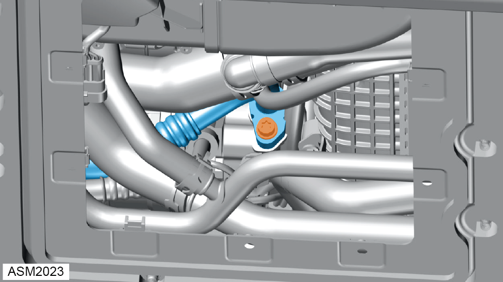
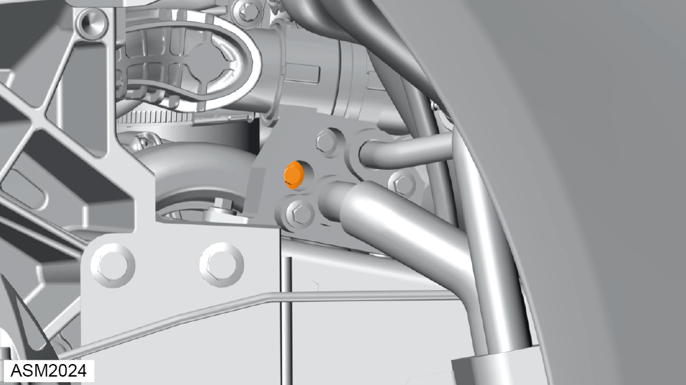
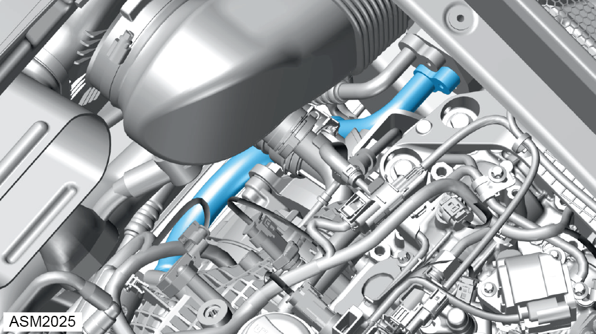
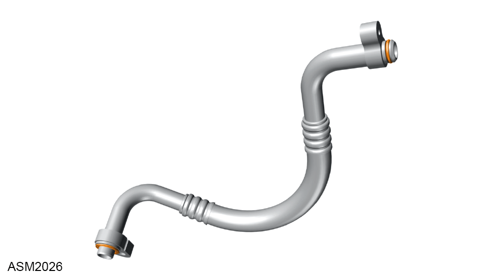

Pipe/Hose Assembly - Compressor Suction - 4 Cylinder
Print
Operation Code: 18.03.06-02
Removal
- Recover Air Conditioning (AC) refrigerant. Refer to procedure.
- Remove rear right side wheel arch liner.
NOTE: Procedure is the same as left side component.
- Remove rear bulkhead access panel. Refer to procedure.
- Remove engine cover. Refer to procedure.

- Remove bolt securing AC compressor suction pipe to AC compressor. Torque 20 Nm.
- Disconnect AC compressor suction pipe from AC compressor

- Remove M6x25 bolt securing AC compressor suction pipe to body pipe. Torque 10 Nm.
- Disconnect AC compressor suction pipe from body pipe.

- Remove AC compressor suction pipe.

- Remove and discard O-rings (x2).
Installation
- Installation is the reverse of removal procedure except for the following:
- Renew O-rings (x2) with new refrigerant oil.
- Recharge AC refrigerant.